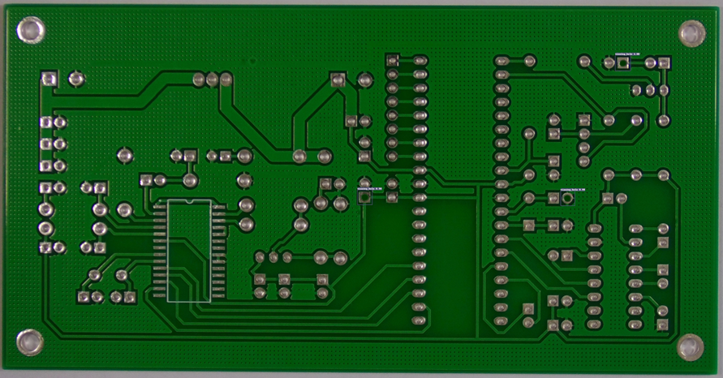
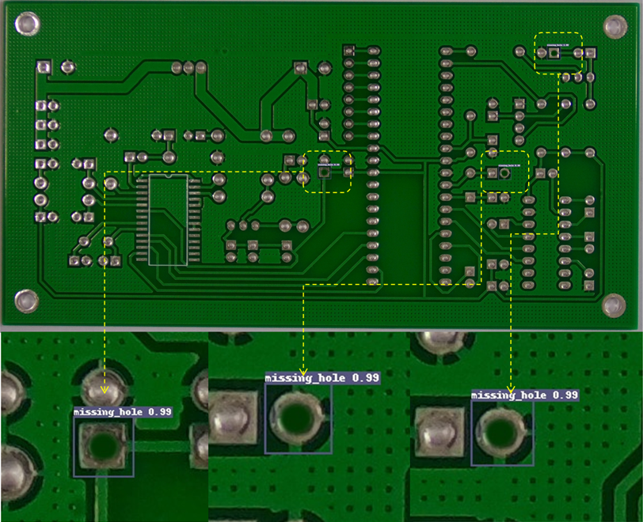

PCB Circuit Board Defect Detection

Published Wed 06 September 2023
PCB defect detection plays a crucial role in ensuring the high quality and reliability of electronic devices. The timely identification and handling of defects on PCBs contribute to various benefits for manufacturers, including improved product quality, reduced production costs, compliance with regulatory standards, maintenance of brand reputation, and enhanced lifespan and stability of electronic devices. Moreover, efficient defect detection not only helps meet industry standards but also boosts the competitiveness of products in the market.
The research goal of this experiment is to optimize PCB defect detection, particularly when dealing with complex PCB structures and diverse defect types. The current approach utilizes Faster R-CNN with ResNet50 as the foundational model. To train and evaluate the model, a publicly available dataset of COCO type is used, which contains six defect classes: missing_hol, mouse_bite, open_circuit, short, spur, and spurious_copper. This dataset consists of a total of 693 images.
The output of the model includes the number of detected defects on the PCB and clear displays of defect types within each bounding box. By presenting defect type labels above or beside each bounding box, the experiment aims to provide an intuitive showcase of the types of defects detected. This design not only offers a clear statistical overview of defect quantities but also furnishes operators with detailed information. This enables operators to swiftly and accurately comprehend the types of defects detected on each PCB image. Such an intuitive presentation aids in simplifying the understanding of detection results and provides convenience for further processing and decision-making.
In summary, the experiment focuses on optimizing PCB defect detection by utilizing a state-of-the-art model and a comprehensive dataset. The goal is to provide a clear and intuitive presentation of defect types, enabling operators to efficiently process the detection results and make informed decisions.
Project leaders
ZeluWang
Partner Organisations
Project Example

The first image is a low-resolution handheld ultrasound image, and the following five images are generated with settings for 2, 4, 6, 8, and 10 levels of image clarity.
© Generalized Electric Medicine 2023 of Macao polytechnic university.
The Generalized Electric Medicine is part of the Macao polytechnic university.